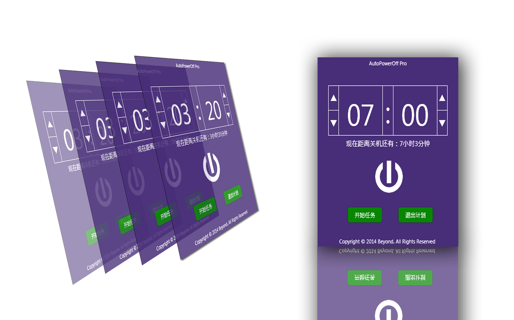
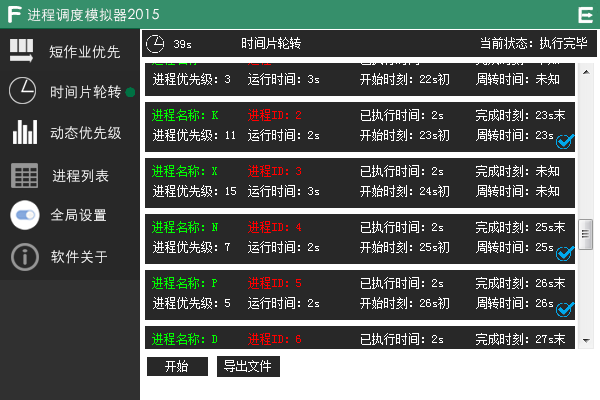

003.AutoPowerOff Pro.
Do you want a software to power off you computer automatically?
Click here to get more infomation:

Released by Anderson Lu.2015-08-20 16:07
002.Process Schedule Simulator 2015.
Now a new software to simulate the shceduling of process has been upload to the server and
you can download it by clicking the link below.

Released by Anderson Lu.2015-8-19 18:55
001.Welcome to Lucien's Pages.
Welcome to Lucien's home page, more wonderful content to update.
Released by Anderson Lu.2015-8-17 10:58